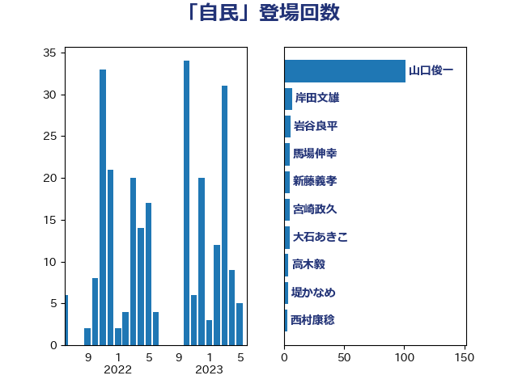

単語「自民」

| 山口俊一 | 自由民主党 | 101 回 |
| 岸田文雄 | 自由民主党 | 7 回 |
| 岩谷良平 | 日本維新の会 | 6 回 |
| 馬場伸幸 | 日本維新の会 | 5 回 |
| 新藤義孝 | 自由民主党 | 5 回 |
| 宮崎政久 | 自由民主党 | 5 回 |
| 大石あきこ | れいわ新選組 | 5 回 |
| 高木毅 | 自由民主党 | 4 回 |
| 堤かなめ | 立憲民主党 | 4 回 |
| 西村康稔 | 自由民主党 | 3 回 |
| 笠井亮 | 日本共産党 | 3 回 |
| 塩川鉄也 | 日本共産党 | 3 回 |
| 高木陽介 | 公明党 | 2 回 |
| 甘利明 | 自由民主党 | 2 回 |
| 小西洋之 | 立憲民主党 | 2 回 |
| 宮本岳志 | 日本共産党 | 2 回 |
| 宮崎勝 | 公明党 | 2 回 |
| 安江伸夫 | 公明党 | 2 回 |
| 大西健介 | 立憲民主党 | 2 回 |
| こやり隆史 | 自由民主党 | 2 回 |
| 高橋克法 | 自由民主党 | 1 回 |
| 高橋はるみ | 自由民主党 | 1 回 |
| 音喜多駿 | 日本維新の会 | 1 回 |
| 階猛 | 立憲民主党 | 1 回 |
| 阿部弘樹 | 日本維新の会 | 1 回 |
| 阿部司 | 日本維新の会 | 1 回 |
| 鎌田さゆり | 立憲民主党 | 1 回 |
| 重徳和彦 | 立憲民主党 | 1 回 |
| 足立敏之 | 自由民主党 | 1 回 |
| 谷田川元 | 立憲民主党 | 1 回 |
| 西田昌司 | 自由民主党 | 1 回 |
| 若松謙維 | 公明党 | 1 回 |
| 舞立昇治 | 自由民主党 | 1 回 |
| 石田昌宏 | 自由民主党 | 1 回 |
| 石川博崇 | 公明党 | 1 回 |
| 矢倉克夫 | 公明党 | 1 回 |
| 田村智子 | 日本共産党 | 1 回 |
| 田村まみ | 国民民主党 | 1 回 |
| 牧山ひろえ | 立憲民主党 | 1 回 |
| 片山さつき | 自由民主党 | 1 回 |
| 熊田裕通 | 自由民主党 | 1 回 |
| 清水真人 | 自由民主党 | 1 回 |
| 泉健太 | 立憲民主党 | 1 回 |
| 比嘉奈津美 | 自由民主党 | 1 回 |
| 櫻井充 | 自由民主党 | 1 回 |
| 森英介 | 自由民主党 | 1 回 |
| 森山浩行 | 立憲民主党 | 1 回 |
| 柿沢未途 | 無所属 | 1 回 |
| 柚木道義 | 立憲民主党 | 1 回 |
| 柘植芳文 | 自由民主党 | 1 回 |
| 松下新平 | 自由民主党 | 1 回 |
| 杉久武 | 公明党 | 1 回 |
| 後藤茂之 | 自由民主党 | 1 回 |
| 川田龍平 | 立憲民主党 | 1 回 |
| 岡本あき子 | 立憲民主党 | 1 回 |
| 山本博司 | 公明党 | 1 回 |
| 小野田紀美 | 自由民主党 | 1 回 |
| 小野泰輔 | 日本維新の会 | 1 回 |
| 小沼巧 | 立憲民主党 | 1 回 |
| 小沢雅仁 | 立憲民主党 | 1 回 |
| 宮路拓馬 | 自由民主党 | 1 回 |
| 宮本徹 | 日本共産党 | 1 回 |
| 宮下一郎 | 自由民主党 | 1 回 |
| 奥野総一郎 | 立憲民主党 | 1 回 |
| 堀井巌 | 自由民主党 | 1 回 |
| 城井崇 | 立憲民主党 | 1 回 |
| 國重徹 | 公明党 | 1 回 |
| 吉田久美子 | 公明党 | 1 回 |
| 吉川沙織 | 立憲民主党 | 1 回 |
| 古屋範子 | 公明党 | 1 回 |
| 北神圭朗 | 無所属 | 1 回 |
| 務台俊介 | 自由民主党 | 1 回 |
| 佐藤啓 | 自由民主党 | 1 回 |
| 伊藤渉 | 公明党 | 1 回 |
| 伊波洋一 | 無所属 | 1 回 |
| 中谷一馬 | 立憲民主党 | 1 回 |
| 三浦信祐 | 公明党 | 1 回 |